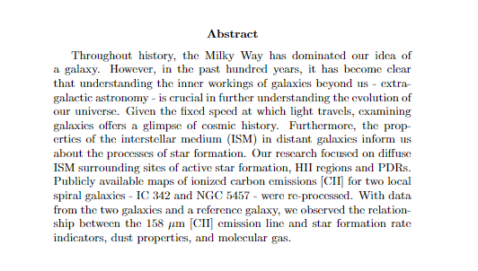

observing the [cii] 158 micron emission line in star forming local galaxies
Mentored by a postdoc from NASA Ames, I spent my summer before senior year exploring extragalactic astrophysics. Full paper to be completed soon!
Catalog for Change
(Work in progress)
In response to the groundbreaking Supreme Court decision overturning Roe v Wade, I sought to compile different resources and state-by-state information in a clear manner. With HTML, CSS and JS, I was able to include features like an interactive map and a video slideshow!
Kanye West Personality Quiz
Created a simple 3-part quiz with HTML, CSS and JS to determine what Kanye West album you are! Feel free to try it out :)